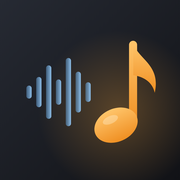

Dettato
Apri un brano dall'app File: lo rallenti senza cambiarne l'intonazione, ripeti i passaggi e vedi le note e gli accordi.
Accordo probabile
–
Note più forti

Apri un brano dall'app File: lo rallenti senza cambiarne l'intonazione, ripeti i passaggi e vedi le note e gli accordi.
Rallenta, ripeti e trascrivi a orecchio
Dall'app File, da iCloud Drive o da una chiavetta: MP3, M4A, WAV, AIFF, FLAC e l'audio dei video. Ogni brano aperto resta qui, con i suoi marker e le impostazioni.